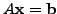
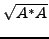
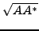
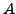

Applying smoothed aggregation multigrid (SA) to solve nonsymmetric
linear systems,
, can be problematic due to a
lack of minimization principle in the coarse-grid corrections. We
propose an approach that is based on approximately applying SA
to the symmetric
positive definite matrices
 or
. These
matrices, however, are typically full and difficult to compute, and it
is therefore not computationally efficient to use these matrices
directly to form a coarse-grid correction. Our proposed approach
approximates these coarse-grid corrections by using smoothed
aggregation to accurately approximate
the right and left singular vectors of  that
correspond to the lowest singular value. These are used
to construct
the interpolation and restriction operators, respectively.
We present some preliminary two-level convergence theory
and numerical results.